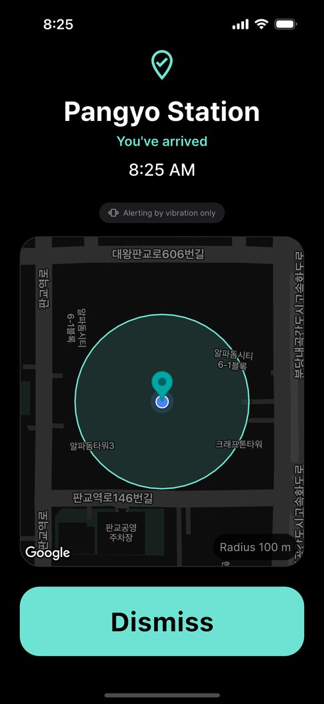

Vibration, or earphones only
Never miss your stop,


Never miss your stop,
quietly every time
Ever dozed off on the bus and missed your stop? Pin a place on the map and your phone vibrates when you arrive. With earphones in, you also get a sound — never through the speaker.
Free on iPhone and Android · English · 한국어 · 日本語 · 中文
